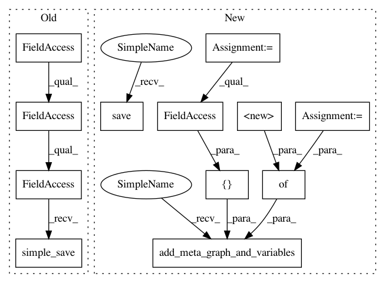

fc1c38580265de55e36ae30f236739d898cde1bc,census/keras/trainer/model.py,,to_savedmodel,#Any#Any#,82
Before Change
def to_savedmodel(model, export_path):
Convert the Keras HDF5 model into TensorFlow SavedModel.
with K.get_session() as sess:
saved_model_util.simple_save(
sess,
export_path,
inputs={"input": model.inputs[0]},
outputs={"income": model.outputs[0]})
def to_numeric_features(features):
Convert the pandas input features to numeric values.
After Change
builder = saved_model_builder.SavedModelBuilder(export_path)
signature = predict_signature_def(inputs={"input": model.inputs[0]},
outputs={"income": model.outputs[0]})
with K.get_session() as sess:
builder.add_meta_graph_and_variables(
sess=sess,
tags=[tag_constants.SERVING],
signature_def_map={
signature_constants.DEFAULT_SERVING_SIGNATURE_DEF_KEY: signature}
)
builder.save()
def to_numeric_features(features):
Convert the pandas input features to numeric values.
In pattern: SUPERPATTERN
Frequency: 3
Non-data size: 12
Instances
Project Name: GoogleCloudPlatform/cloudml-samples
Commit Name: fc1c38580265de55e36ae30f236739d898cde1bc
Time: 2017-12-08
Author: puneith@google.com
File Name: census/keras/trainer/model.py
Class Name:
Method Name: to_savedmodel
Project Name: GoogleCloudPlatform/cloudml-samples
Commit Name: 2b44386c5fdb37afa9523b7d4591a408c685d23b
Time: 2018-02-03
Author: remi.turpaud@gmail.com
File Name: census/keras/trainer/model.py
Class Name:
Method Name: to_savedmodel
Project Name: GoogleCloudPlatform/cloudml-samples
Commit Name: fc1c38580265de55e36ae30f236739d898cde1bc
Time: 2017-12-08
Author: puneith@google.com
File Name: flowers/trainer/model.py
Class Name: Model
Method Name: export